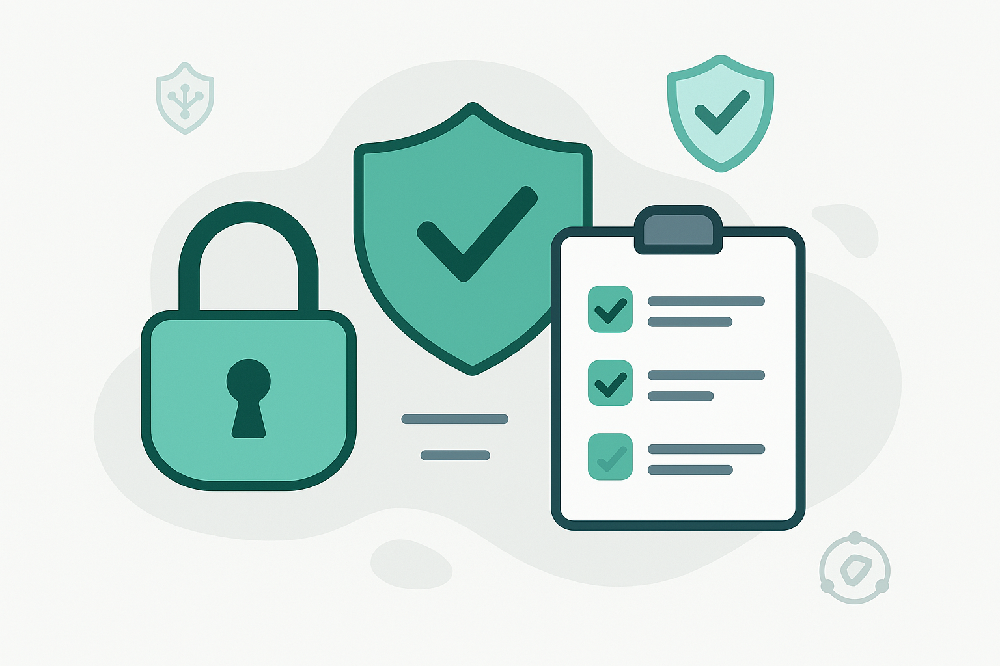

Bem-vindo! Proteja-se no Mundo Digital.
Este espaço é dedicado a mantê-lo informado sobre as últimas notícias, alertas de golpes, perigos atuais no mundo digital e dicas essenciais de segurança da informação. Nosso objetivo é fornecer conhecimento para que você possa navegar na internet e utilizar seus dispositivos com mais segurança.
Explore as seções abaixo para se atualizar e teste seus conhecimentos com nosso quiz interativo. A informação é sua melhor defesa!
Notícias e Alertas Recentes
Novo golpe no YouTube usa vídeos de cheats para espalhar vírus Arcane Stealer que rouba dados.
Cibercriminosos estão utilizando vídeos no YouTube que prometem cheats e vantagens em jogos populares para disseminar o malware Arcane Stealer. Este vírus é projetado para roubar informações pessoais e credenciais de acesso dos usuários infectados. É crucial que os jogadores estejam atentos a promessas duvidosas e evitem baixar arquivos de fontes não confiáveis, mesmo que pareçam oferecer benefícios em seus jogos favoritos. A atenção a links suspeitos e o uso de soluções de segurança robustas são essenciais para evitar esse tipo de ameaça.
CES 2025 revela inovações em gadgets e eletrodomésticos inteligentes, levantando questões sobre cibersegurança.
A Consumer Electronics Show (CES) 2025, realizada em Las Vegas, apresentou centenas de novos gadgets e eletrodomésticos inteligentes. Essas inovações, embora tragam conveniência, também introduzem novos vetores de ataque e preocupações com a segurança cibernética. É fundamental que tanto fabricantes quanto consumidores considerem os aspectos de segurança desde o design até o uso diário desses dispositivos, implementando medidas como senhas fortes, atualizações regulares e segmentação de rede para mitigar os riscos associados à crescente conectividade dos lares.
Dicas Essenciais de Segurança para o seu Dia a Dia
- Crie Senhas Fortes e Únicas: Use combinações complexas de letras maiúsculas e minúsculas, números e símbolos. Evite usar a mesma senha para múltiplas contas. Considere um gerenciador de senhas.
- Desconfie de Mensagens Suspeitas (Phishing): Não clique em links ou baixe anexos de e-mails, SMS ou mensagens instantâneas de remetentes desconhecidos ou que pareçam suspeitos, mesmo que pareçam ser de empresas conhecidas. Verifique sempre o endereço do remetente e, na dúvida, acesse o site oficial da empresa diretamente no navegador.
Teste Seus Conhecimentos em Segurança Digital
Ouça: Boas Práticas_ Uso de E-mails e Segurança da Informação na USP
Audio gerado 01/06/2025
Ouça: Como Evitar Golpes Online_ Phishing e Outras Fraudes
Audio gerado 01/06/2025
Ouça: O Golpe da Selfie e a Fraude na Biometria Facial
Aqui está um podcast resumido:
Ouça: Discussão Sobre Segurança da Informação
Aqui está um podcast com dicas importantes sobre segurança cibernética:
Ouça: Segurança da Informação Custo ou Investimento
Aqui está um podcast resumido:
Ouça: O Golpe da Selfie e a Fraude na Biometria Facial
Aqui está um podcast resumido: